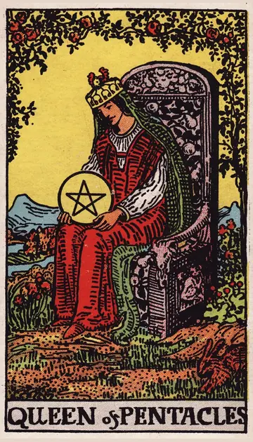

正位置ペンタクルのクイーンの正位置
キーワード：包容力・豊かさ・面倒見
恋愛
温かく、安心できる関係を育める時です。
相手の気持ちあなたといると、安心できると感じているようです。
この先安心できる、温かい関係が育ちそうです。
アドバイス手料理や、ささやかな気遣いで愛情を示しましょう。
気をつけること世話を焼きすぎて、相手の負担にならないように。
この先安心できる、温かい関係が育ちそうです。
アドバイス手料理や、ささやかな気遣いで愛情を示しましょう。
気をつけること世話を焼きすぎて、相手の負担にならないように。
人間関係
面倒見の良さが、慕われる時です。
相手の気持ちあなたの温かさに、感謝しているようです。
この先信頼され、頼られることが増えそうです。
アドバイス困っている人を、さりげなく助けましょう。
気をつけること何でも引き受けすぎないように。
この先信頼され、頼られることが増えそうです。
アドバイス困っている人を、さりげなく助けましょう。
気をつけること何でも引き受けすぎないように。
仕事・学業
現実的な判断と気配りで、成果を出せる時期です。
この先堅実な働きが、評価されそうです。
アドバイス実務と人への配慮を、両立させましょう。
気をつけること自分のことを、後回しにしないように。
アドバイス実務と人への配慮を、両立させましょう。
気をつけること自分のことを、後回しにしないように。
お金
家計を、上手に切り盛りできる時です。
この先安定した家計が続きそうです。
アドバイス暮らしに必要なところに、上手にお金を使いましょう。
気をつけること人のために、使いすぎないように。
アドバイス暮らしに必要なところに、上手にお金を使いましょう。
気をつけること人のために、使いすぎないように。
生活
温かく、心地よい暮らしを整えられる時です。
この先心地よい暮らしが育ちそうです。
アドバイス手料理や部屋づくりを、楽しみましょう。
気をつけること家のことを、一人で抱えすぎないように。
アドバイス手料理や部屋づくりを、楽しみましょう。
気をつけること家のことを、一人で抱えすぎないように。
今日の運勢
家や身の回りを整えるのに向いた日です。
この先心地よい時間を過ごせそうです。
アドバイス部屋を整えて、心地よく過ごしましょう。
気をつけること家事や用事に、追われすぎないように。
アドバイス部屋を整えて、心地よく過ごしましょう。
気をつけること家事や用事に、追われすぎないように。
逆位置ペンタクルのクイーンの逆位置
キーワード：世話焼きすぎ・生活の不安・自分を後回し
恋愛
尽くしすぎて、疲れやすい時です。
相手の気持ちあなたに尽くしすぎて、疲れているのかもしれません。
この先自分を大切にすれば、関係も穏やかになりそうです。
アドバイスまず、自分を大切にしましょう。
気をつけること尽くしすぎて、見返りを求めないように。
この先自分を大切にすれば、関係も穏やかになりそうです。
アドバイスまず、自分を大切にしましょう。
気をつけること尽くしすぎて、見返りを求めないように。
人間関係
人の世話に、追われやすい時です。
相手の気持ちあなたのことを、心配しすぎているようです。
この先頼り頼られる、良い関係に戻れそうです。
アドバイス頼まれごとは、できる範囲で引き受けましょう。
気をつけることおせっかいにならないように。
この先頼り頼られる、良い関係に戻れそうです。
アドバイス頼まれごとは、できる範囲で引き受けましょう。
気をつけることおせっかいにならないように。
仕事・学業
仕事と生活のバランスが、崩れやすい時期です。
この先バランスが整えば、仕事もうまく回りそうです。
アドバイス仕事と休みのバランスを、見直しましょう。
気をつけること疲れを隠して、無理をしないように。
アドバイス仕事と休みのバランスを、見直しましょう。
気をつけること疲れを隠して、無理をしないように。
お金
生活費のことで、不安になりやすい時です。
この先見直せば、落ち着きそうです。
アドバイス家計を見直して、不安を小さくしましょう。
気をつけること心配を膨らませすぎないように。
アドバイス家計を見直して、不安を小さくしましょう。
気をつけること心配を膨らませすぎないように。
生活
家のことに追われて、疲れやすい時です。
この先休めば、暮らしも整いそうです。
アドバイスまず自分を、休ませましょう。
気をつけること無理を隠さないように。
アドバイスまず自分を、休ませましょう。
気をつけること無理を隠さないように。
今日の運勢
お金や生活のことで、不安になりやすい日です。
この先不安が落ち着きそうです。
アドバイス家計を見直して、不安を減らしましょう。
気をつけることお金の心配を、膨らませすぎないように。
アドバイス家計を見直して、不安を減らしましょう。
気をつけることお金の心配を、膨らませすぎないように。
このページの文章は、アプリ「ひとやすみタロット」の結果に使っている文章です。アプリでは、あなたの相談や、カードが出た位置（今の状況・これからの流れ・アドバイス）に合わせて、この中から文章を選びます。逆位置の読み方は逆位置のことをご覧ください。
「ペンタクルのクイーン」が出たら、あなたの相談ではどう読む？
アプリでは、質問への答えに合わせて、カードの言葉をあなたの相談に合わせて届けます。
Android 対応・会員登録なし